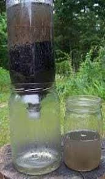

Filtro de agua casero
A pesar de que en el siglo XXI la mayor parte de la civilización occidental tenga acceso a agua potable, lo cierto es que hay muchas regiones en el mundo que no tienen agua potable. De hecho, solo el 0.007% del agua existente en la Tierra se puede beber. En muchos de estos lugares existe, además, una escasez de recursos que afecta a todos los ámbitos de la vida, no sólo al económico. Fundación Aquae tiene un fuerte compromiso con promover el acceso universal del agua, un bien necesario para la vida. Por eso te presentamos una ingeniosa manera de hacer un filtro de agua casero con materiales que son fáciles de encontrar.(Fundación Aquae, 2022)

Materiales
- Recipiente de plástico transparente.
- Algodón natural.
- Carbón activado en polvo.
- Colador.
- Recipiente hondo de plástico o cristal.
Pasos para armar tu filtro
PASO 1: cortar el recipiente de plástico transparente por la parte superior creando una tapa que se pueda abrir y cerrar.
PASO 2: Coloca la boca de la botella con su tapa hacia abajo.
PASO 3: Rellena el interior de la botella con capas de algodón o polifill en el fondo y luego el carbón activado en la parte superior.
PASO 4: Coloca un recipiente hondo de plástico o cristal sobre una superficie plana.
PASO 5: Coloca el filtro de agua casero con la abertura original (o boca) hacia abajo y la tapa puesta.
PASO 6: En la parte superior de la botella, previamente cortada, coloca el colador.
Como usar tu filtro
Comienza a verter el agua a ser filtrada por el colador permitiendo que la misma comience a traspasar las distintas capas de carbón activado y algodón luego cierra la tapa superior cortada y deja reposar el agua por lo menos 15 minutos. Deja el filtro de agua casero siempre en posición vertical. Al finalizar el tiempo requerido, abre la boca de la botella de la parte inferior y deja que el agua ya filtrada se deposite en el recipiente hondo de plástico o cristal. El agua ya está lista para consumir.
Beneficios del filtro
El agua es un elemento fundamental en nuestras vidas, por lo que es importante consumir agua de calidad. Aunque existen opciones comerciales que sirven como purificadores para grandes familias o espacios, con tu filtro de agua casero también podrás aprovecharte de los beneficios de este útil invento. A continuación te presentamos los más importantes segun Fundación Aquae (2022):
- Desaparece la necesidad de utilizar cloro para la eliminación de virus, parásitos y bacterias. De hecho, el cloro es potencialmente perjudicial para la salud ya que está asociado a determinados tipos de cáncer como el de colon y vejiga. Da un sabor más agradable al agua, ya que el filtro de agua ayuda a eliminar el cloro y los microorganismos bacterianos. Sirven para eliminar pesticidias y metales pesados. Cuando se utiliza este tipo de componentes químicos en la producción industrial y agrícola, pueden llegar a las reservas de agua subterránea.(Fundación Aquae, 2022)
- Contribuyen a disminuir el riesgo de desarrollar patologías, infecciones o enfermedades derivadas de la ingesta de agua Es decir, aumentan la seguridad y disminuyen el riesgo de padecer enfermedades o infecciones por la ingesta de agua contaminada. Por ejemplo, eliminan por completo el riesgo de padecer enfermedades gastrointestinales a causa de agua en mal estado. Gran parte de las enfermedades gastrointestinales de deben al consumo de agua contaminada.(Fundación Aquae, 2022)
- El consumo del agua purificada con un filtro de agua casero está recomendado para niños y mujeres embarazadas.(Fundación Aquae, 2022)
Video sobre como funciona el carbon activado para la purificacion del agua